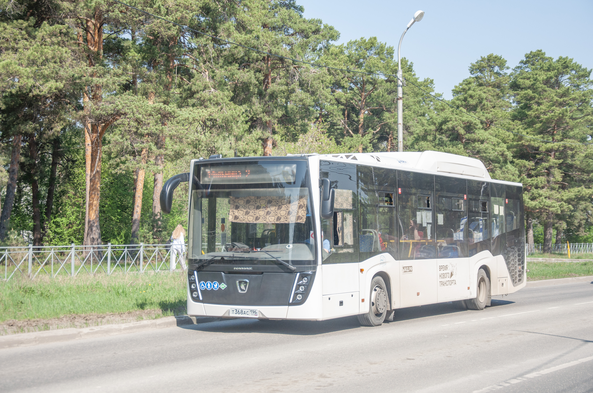
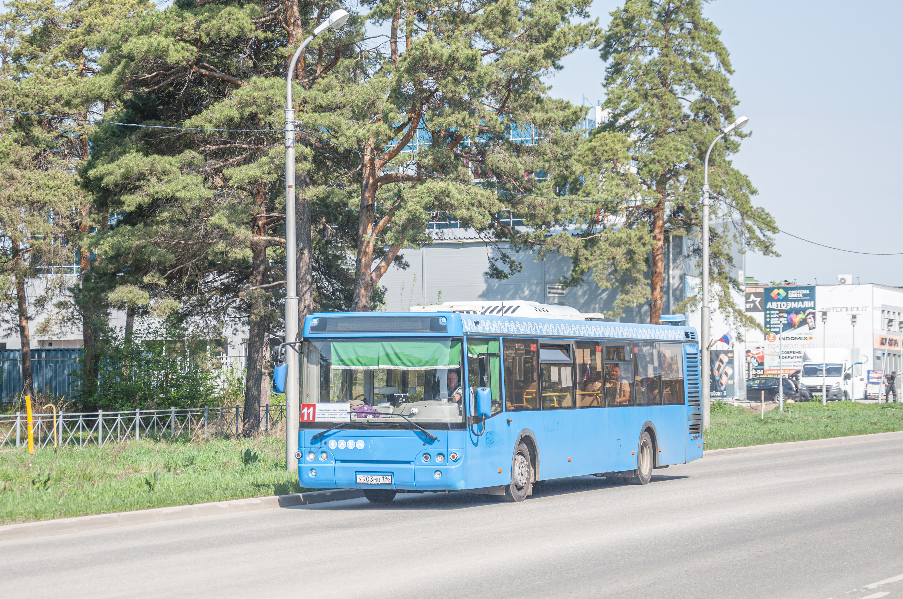
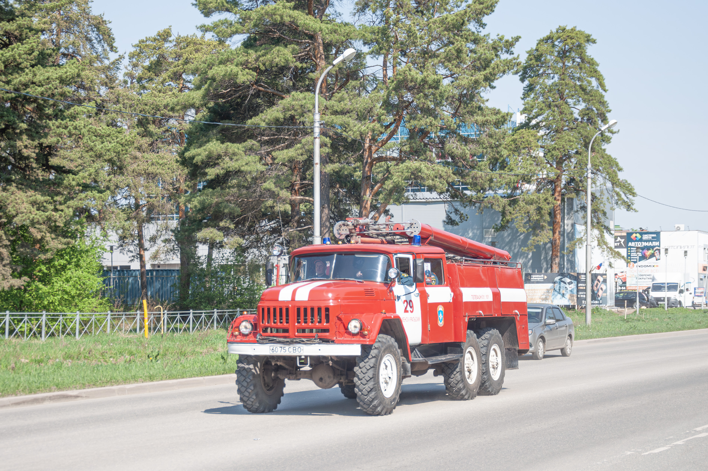
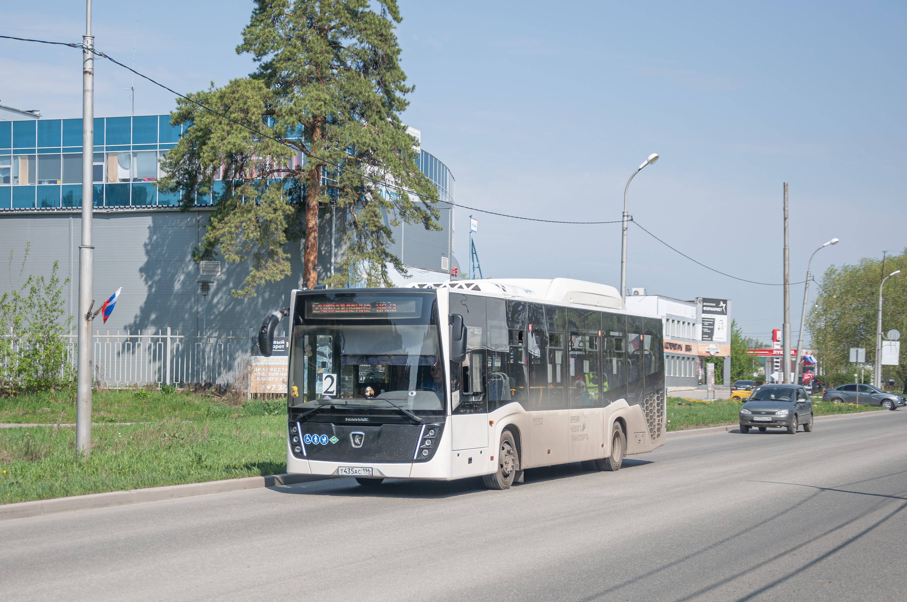
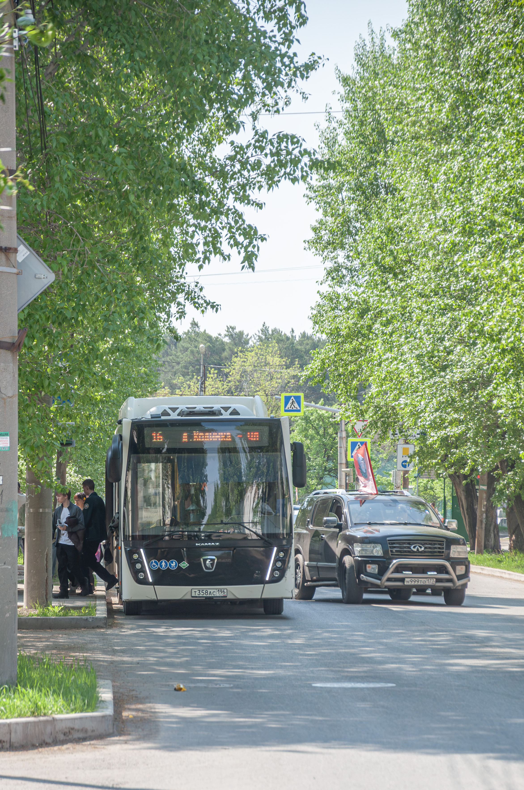
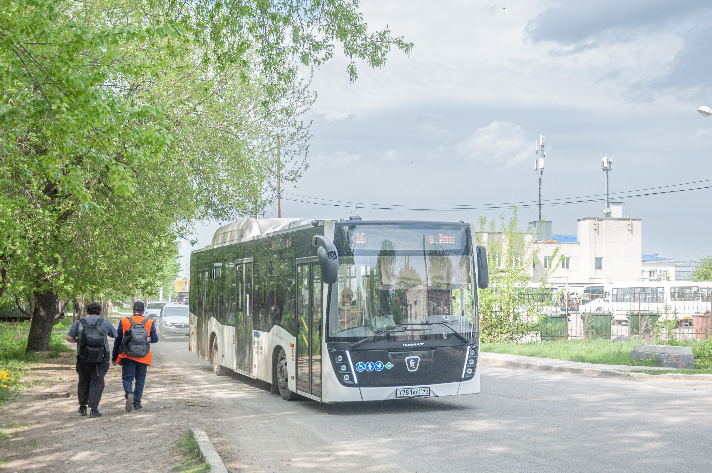
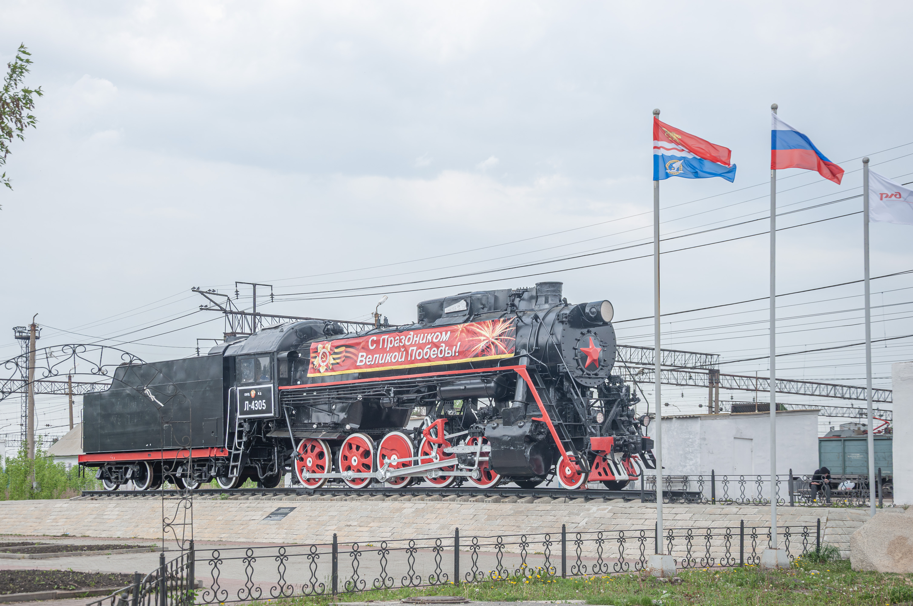
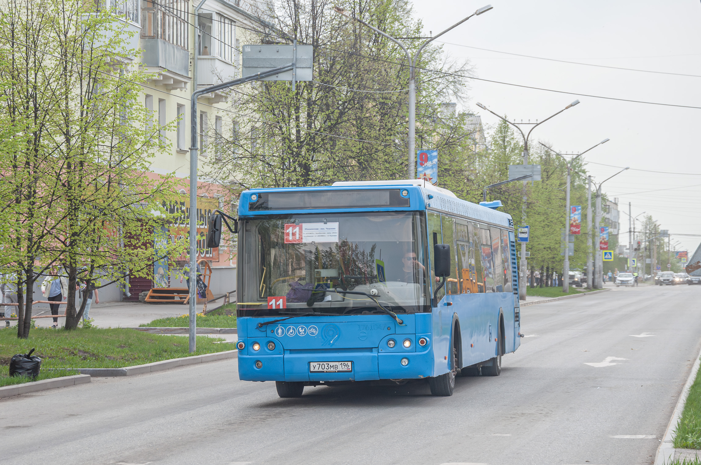

30 Мая, 2026, 12:17
sergaytrain
Приветствую всех читателей! Сегодня — День Победы, а для фотографов общественного транспорта это ещё и особенный день. Почему? Да потому что все автобусы внезапно поедут по изменённым маршрутам! Объезжая площадь около Администрации, техника сворачивает туда, куда обычно не заглядывает. Дело было в субботу, машин на улицах оказалось на удивление мало. Я решил не ждать общественный транспорт и пошёл пешком от своего дома (микрорайон Торговый), чтобы пофоткать автобусы вместе с известным фотографом makstv. Встретились мы на улице Рябова — и тут же упёрлись в пробку. Решили не стоять на месте, прошли дальше, за светофор, и в итоге заняли позицию на остановке "Космос" в сторону Синарского района. Прождали там прилично времени, успели щёлкнуть несколько автобусов. Но обо всём по порядку. Первым в объектив попал НефАЗ-5299-30-57 — правда, кадр вышел с досадным пересветом, солнце стояло не с той стороны. Этот гигант ехал на 14 маршруте. И тут самое интересное: 14-й автобус здесь официально не ходит вообще никогда. Но именно в этот день правило изменилось ровно на сутки — и мы стали свидетелями этой маленькой транспортной аномалии.

Дальше всё пошло по накатанной, но скучно не было ни секунды. Мы с makstv залипли в свои телефоны, как два диспетчера во время апокалипсиса. Потому что отображение автобусов на Яндекс Картах — умерло. Наглухо. Не грузилось, не показывало, не помогало. Я тогда выдал:
— Макс, ты глянь, Яндекс совсем лёг. Ни одной пипки на карте, хоть волком вой.
makstv только рукой махнул, даже не поднимая головы от экрана:
— А чего ты хотел? Яндекс — рукажопы, я тебе тысячу раз говорил. Ну всё, переходим на "Свердловский транспорт".
И знаете что? Он был прав. Вещь, конечно, полезная, но с одним огромным "НО". Автобусы там обновляются с черепашьей скоростью — местоположение каждого меняется раз в 2-3 минуты. Представьте себе: ты стоишь на остановке "Космос", ветер гуляет, солнце уже начинает садиться, а на карте автобус всё ещё три остановки назад.
— Макс, ну где этот ЛиАЗ? — спрашиваю я, уже начиная нервно переминаться с ноги на ногу. — Три минуты прошло, а на карте он всё ещё у Синарского района.
makstv спокойно так, с ленцой, отвечает, не отрываясь от телефона:
— Спокуха, брат. Наш Свердловский транспорт работает в режиме "было — стало". Он сейчас уже, может, перед носом проехал, а карта только думает. Жди. Транспорт любит терпеливых.
И тут — о чудо! Прямо из-за поворота, тяжело шумя дизелем и слегка проседая на неровностях улицы Рябова, выруливает тот самый. Всеми "любимый", вечно обсуждаемый, по-своему легендарный — ЛиАЗ-5292.65. Я аж локтем Макса толкаю:
— Смотри, смотри! Он! Твой любимец! ЛиАЗ из самой Москвы, твою ж дивизию!
makstv усмехается, поднимая камеру:
— А я тебе говорил. Кто ждёт — тот дождётся. Давай, щёлкай, пока Яндекс думает, что мы всё ещё на улице Рябова стоим.
Этот экземпляр оказался не простым местным трудягой, а самым настоящим столичным гостем. 2016 год выпуска, вылинявшая, но всё ещё гордая ливрея Московского Транспорта. Такие красавцы — настоящие ветераны дорог, отмотавшие сотни тысяч километров по бетонке и асфальту, а теперь бороздят наши улицы. Их передали нам в начале 2026 года. И знаете, сколько их в городе? Всего пять штук. Пять! На весь огромный мегаполис.
— Макс, а помнишь, у "Экспресс-Сити" были такие же, но новенькие, 2024 года? — спрашиваю я, не опуская камеры. — Прям из салона, не б/у.
makstv кивает, делая очередной кадр:
— Ещё бы не помнить. Те красавцы были огонь. А этого московского деда, знаешь, тоже уважаю. Не сломался, доехал. С характером техника. Кстати, он на каком маршруте?
Я тыкаю в телефон:
— По "Свердловскому транспорту" смотрю... 11 маршрут! Представляешь, 11-й, а мы тут про 14-й вспоминали.
makstv довольно ухмыляется, провожая ЛиАЗ взглядом:
— Значит, повезло нам сегодня. 14-й НефАЗ, теперь 11-й ЛиАЗ из Москвы. Я ж тебе говорил: День Победы творит чудеса даже с расписаниями. Давай дальше смотреть, кого ещё нам карта подкинет.
И мы стояли, улыбались и хлопали глазами, потому что ради таких кадров, таких диалогов и такой атмосферы и стоит загорать на остановках, материть Яндекс и каждые две минуты обновлять "Свердловский транспорт".

Позже, ещё немного простояв на остановке "Космос" и порядком позагорав на весеннем солнце, мы встретили кое-что необычное. Мимо нас, лениво урча сиреной на холостых, протащилась пожарная машина. И тут случилось невероятное — мы оба вскинули камеры одновременно. Я — свой верный аппарат, makstv — свой. Два щелчка, почти слившихся в один. Никто не зевнул, никто не выпал в осадок. Рефлексы сработали как у хорошо обученной команды. И только когда красный борт уже скрылся за поворотом в сторону Синарского района, я заметил номер. 6075СВО. Да-да, именно так. СВО. Мы переглянулись с makstv, и он молча показал мне дисплей своей камеры — тот самый кадр. Я глянул на свой — тоже готово. Теперь у нас есть два ракурса этой загадочной техники. Теперь сижу и думаю: это такая тонкая посылочка от кого-то сверху, неудачное совпадение цифр и букв, или просто нам сегодня дико повезло стать свидетелями? 6075СВО. Как думаете, пасхалка или чистая случайность? Я склоняюсь к первому, потому что День Победы, чёрт возьми, и такие номера просто так не появляются. Оставляю этот вопрос открытым для комментариев.

Позже мы начали потихоньку двигаться в сторону улицы Парковой, как раз туда, где автобусы делали объезд площади Администрации. Только отошли от остановки "Космос" — буквально сделали первые шагов пятьдесят, ещё даже обсудить следующий план не успели, — и тут я увидел его. Ещё один НефАЗ-5299-30-57. Этот шёл по 2 маршруту. Грязноватый, конечно. Весь задний борт в какой-то серой накипи, окна в пыли, по бортам полосы от луж, которые он явно форсировал на скорости. Колёса в разводах, особенно левое заднее — будто его специально окунули в жидкую грязь. Праздничный день, а он такой замухрышка, обычный рабочий конь. Но меня это даже порадовало. Не всё же стерильные автобусы снимать. Правда жизни — она вот такая, в подтёках и дорожной грязи. Я вскинул камеру, пока makstv что-то копался в своём рюкзаке, и щёлкнул. Один дубль, второй — на всякий случай. Неидеальный, но честный НефАЗ-5299-30-57 на 2-м маршруте. И мы пошли дальше, к улице Парковой, чувствуя, что день складывается богатым на кадры.

Позже, пока мы дошли до улицы Парковой, удалось сфоткать только один автобус. Им снова оказался НефАЗ-5299-30-57, но на этот раз на 16 маршруте. Техника как техника, привычный городской трудяга, ничего выдающегося. В этот момент автобус как раз стоял на остановке — высаживал или забирал пассажиров, не суть. Я уже почти опустил камеру, как вдруг заметил кое-что интересное. Какая-то машина — я даже не понял, что за модель, то ли микроавтобус, то ли внедорожник, — пошла на обгон стоящего на остановке НефАЗа. И на ней развевался флаг. Какой именно — я, честно говоря, так и не смог разглядеть. Флаг был небольшой, ветер его всё время выворачивал то одной стороной, то другой, плюс солнце било прямо в глаза. Цвета какие-то незнакомые, то ли триколор, но не наш, то ли вообще что-то редкое. Может, чей-то областной, может, общественной организации — без понятия. Но сам факт меня зацепил. Машина с флагом, лихо обгоняющая автобус прямо на остановке, — это уже не просто транспортная съёмка, а какая-то маленькая уличная драма. Я успел щёлкнуть, пока НефАЗ не закрыл её своей тушей. Пусть флаг остаётся загадкой. Может, кто в комментариях разглядит, если приблизить?

Дальше мы пошли по улице Парковой в сторону вокзала. Дорога неблизкая, но фотографу к расстояниям не привыкать. Шли неспеша, перекидываясь редкими фразами, поглядывая по сторонам — вдруг ещё что-то интересное выскочит. И уже около автовокзала мы встретили ещё один НефАЗ-5299-30-57. Снова на 16 маршруте. Видимо, сегодня у этих машин был какой-то свой парад. Этот экземпляр ехал по Привокзальной улице, неспешно подруливая к остановочному карману. Мы с makstv сфоткали его прямо около автовокзала. Интересно, что само здание автовокзала стоит буквально рядышком с железнодорожным вокзалом, но в кадр он, конечно, не попал — только автобус, дорога и немного привокзальной суеты. А вот второй кадр мы сделали уже около ЖД вокзала, когда чуть прошли дальше. Так один НефАЗ на 16 маршруте попал к нам в коллекцию сразу с двух точек: сначала у автовокзала, потом у железнодорожного. Разные фоны, разное настроение, но одна и та же машина. Будто маленькая серия снимков под названием «Один день из жизни вокзального автобуса».

Дальше я решил немного отвлечься от автобусной темы. Пока мы были у вокзала, я не мог упустить возможность сфоткать паровоз Л-4305, который стоит здесь как памятник. Этот могучий железный ветеран возвышается на постаменте прямо у вокзальной площади, привлекая взгляды и детей, и взрослых. Паровоз серии «Л», названной в честь легендарного конструктора Лебедянского, когда-то бороздил просторы нашей необъятной родины, тащил тяжёлые составы с углём и рудой, свистел на перегонах и дымил так, что за километр было видно. А теперь стоит, гордый и чёрный, с огромными колёсами и длинной трубой, напоминая всем нам о великой эпохе паровозной тяги. Я вскинул камеру, поймал ракурс, чтобы в кадр попал и паровоз целиком, и привокзальная архитектура на заднем плане. Л-4305 получился просто шикарно — серьёзный, монументальный, с налётом времени и истории. Пусть в моём репортаже сегодня в основном автобусы, но один кадр старого доброго паровоза точно не будет лишним.

Позже мы пошли на улицу Кунавина. Место само по себе не самое фотогеничное, но сегодня ему выпал шанс засиять. И там, как ни удивительно, мы снова встретили ЛиАЗ-5292.65. Тот самый, московский гость, на этот раз на 11 маршруте. Интервал у них, конечно, был огромный — будто кто-то специально заставлял нас ждать. Но ожидание того стоило. Самое крутое началось в тот момент, когда автобус только показался из-за поворота. Небо, которое ещё минуту назад было ясным и солнечным, вдруг затянуло плотными тучами. Началась переменная облачность. Кадр получился просто бомбезный! В пасмурную погоду свет растекается мягко и ровно, без жёстких теней, без выбитых бликов на мокром асфальте и без пересветов на белых бортах. ЛиАЗ-5292.65 на фоне серого неба смотрелся как настоящий инопланетный корабль — контрастный, объёмный, с чёткими линиями. Я сделал несколько дублей, пока облака не уползли дальше. makstv тоже остался доволен — мы переглянулись и одновременно выдохнули. Вот за такие моменты мы и любим транспортную съёмку. Не за идеальные условия, а за ту самую «бомбезность», когда природа и техника встают в один строй.

Потом у makstv начало защипывать в глазах. Аллергия на пыльцу — весенняя классика, никуда от неё не деться, особенно когда столько часов торчишь на улице, нюхаешь выхлопные газы и цветущие тополя одновременно. Он протёр глаза, пару раз чихнул и сказал, что пора закругляться. Жалко, конечно, но здоровье важнее любых кадров. Мы пожали друг другу руки и разошлись по домам. А я уехал на автобусе №5. Модель — ПАЗ Вектор. Жёлтенький такой, привычный, невзрачный на первый взгляд, но родной. Зашёл, приложил карту, сел у окна и всю дорогу пересматривал отснятое на камере. День получился насыщенным: НефАЗы, ЛиАЗы из самой Москвы, загадочный флаг на обгоне, пожарная машина с номером 6075СВО, паровоз Л-4305… И ПАЗ Вектор на 5-м маршруте домой, как логичное завершение нашей транспортной истории. До новых встреч, друзья, и удачных кадров!